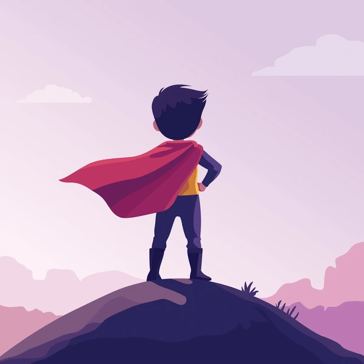

FINAL BUENO: EL HÉROE
Has triunfado. El dragón, agradecido por haberlo curado, se convierte en tu aliado y te ayuda a salir de la cripta con una de sus garras.
Donas la máscara ceremonial al Museo Nacional de Arqueología de Guatemala. Tu nombre aparece en todos los periódicos. La comunidad científica te aclama como el descubridor de la Cripta de Ixbalanqué.
El hada aparece una última vez y te bendice: tu próxima expedición será aún más grandiosa.
